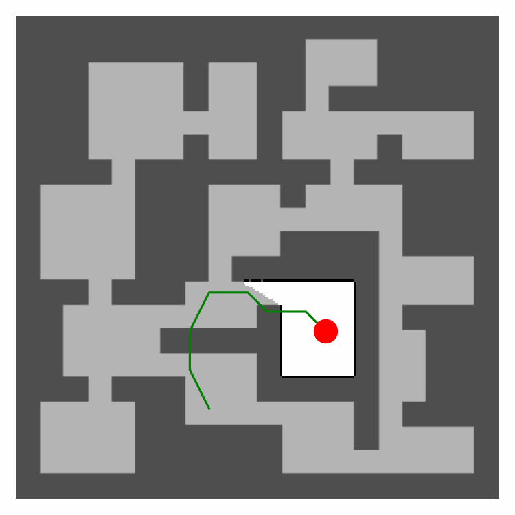
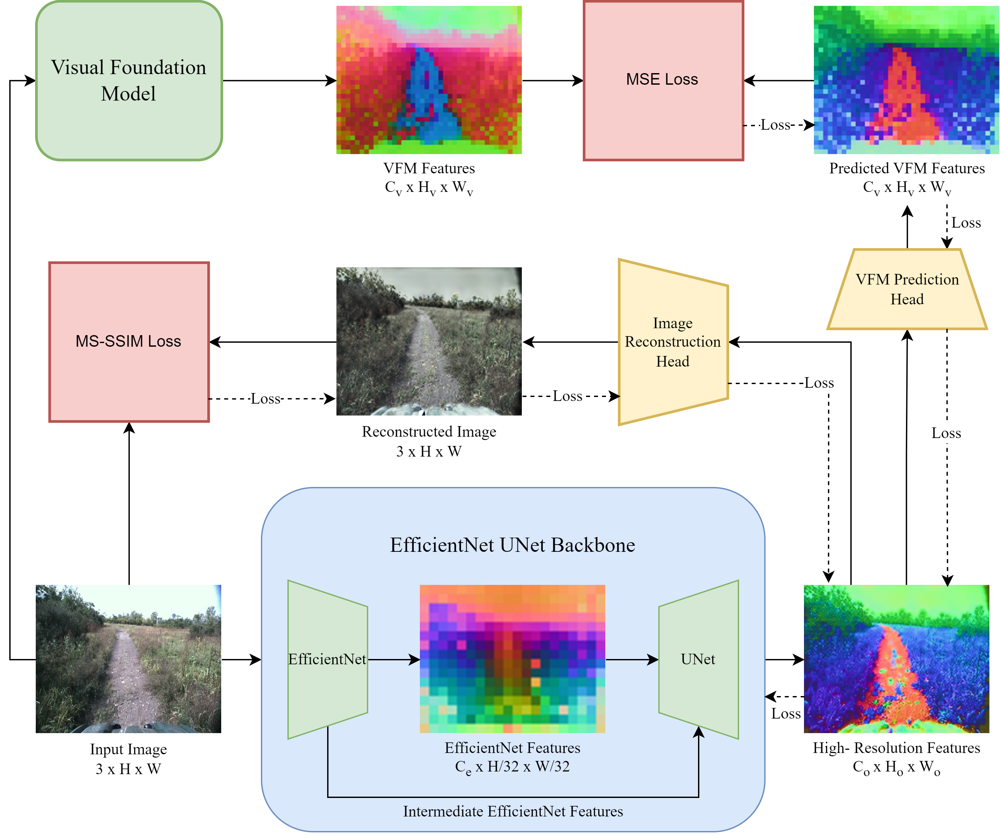
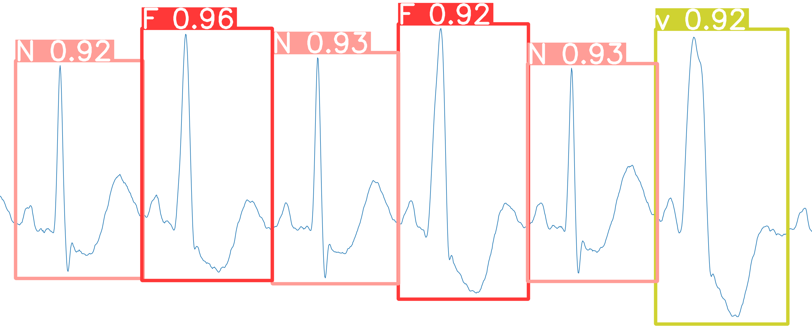

|
Jeric Lew I'm a final year undergraduate @ National University of Singapore (NUS), with a major in Mechanical Engineering (Robotics) and a minor in Computer Science. At NUS, I was advised by Professor Guillaume Sartoretti and Dr. Yuhong Cao while conducting research @ MARMot Lab. In Summer 2024, I was under the supervision of Professor Sebastian Scherer and Dr. Wenshan Wang when I interned @ Carnegie Mellon University's (CMU) Robotics Institute as a part of CMU's Robotics Institute Summer Scholars (RISS) program. |

|
ResearchMy research interests include robotics, computer vision, and machine learning. I am particularly interested in leveraging deep-learning techniques to enhance robot capabilities (robot learning). My personal goal in robotics research is to develop truly useful autonomous robots that can reason about and adapt to new environments or scenarios. Currently, I am working on diffusion models to improve robot policies for single-agent and multi-agent autonomous exploration. |
|  |
DARE: Diffusion Policy for Autonomous Robot Exploration
Yuhong Cao*, Jeric Lew*, Jingsong Liang, Jin Cheng, Guillaume Sartoretti IEEE International Conference on Robotics and Automation (ICRA), 2025 arXiv / video Diffusion models for improved autonomous robot exploration by predicting explicit long-term trajectories into unknown areas hence implicitly reasoning about unknown spatial structure. |

|
SALON: Self-supervised Adaptive Learning for Off-road Navigation
Matthew Sivaprakasam, Samuel Triest, Cherie Ho, Shubhra Aich, Jeric Lew, Isaiah Adu, Wenshan Wang, Sebastian Scherer IEEE International Conference on Robotics and Automation (ICRA), 2025 arXiv / project / video Perception-action framework for robust off-road navigation that enables fast adaptation of traversability estimates through learning online. |
|  |
SHRED: Swift High-Resolution features via Efficient Distillation
Jeric Lew, Matthew Sivaprakasam, Samuel Triest, Wenshan Wang, Sebastian Scherer RISS Working Papers Journal, 2024 poster / video A knowledge distillation framework trains a faster, high-resolution CNN-based image encoder with capabilities comparable to ViT-based models, meant for real-time off-road navigation. |
|  |
A Novel real-time arrhythmia detection model using YOLOv8
Guang Jun Nicholas Ang, Aritejh Kr Goil, Henryk Chan, Jeric Lew, Xin Chun Lee, Raihan Bin, Ahmad Mustaffa, Timotius Jason, Ze Ting Woon, Bingquan Shen arXiv, 2023 arXiv / bibtex Real-time arrhythmia detection using a loss-modified YOLOv8-based model on single-lead ECG signals achieves 99.5% accuracy for home-based cardiac monitoring. |
Teaching |
Industry Experience |
|
Website template from Jon Barron |